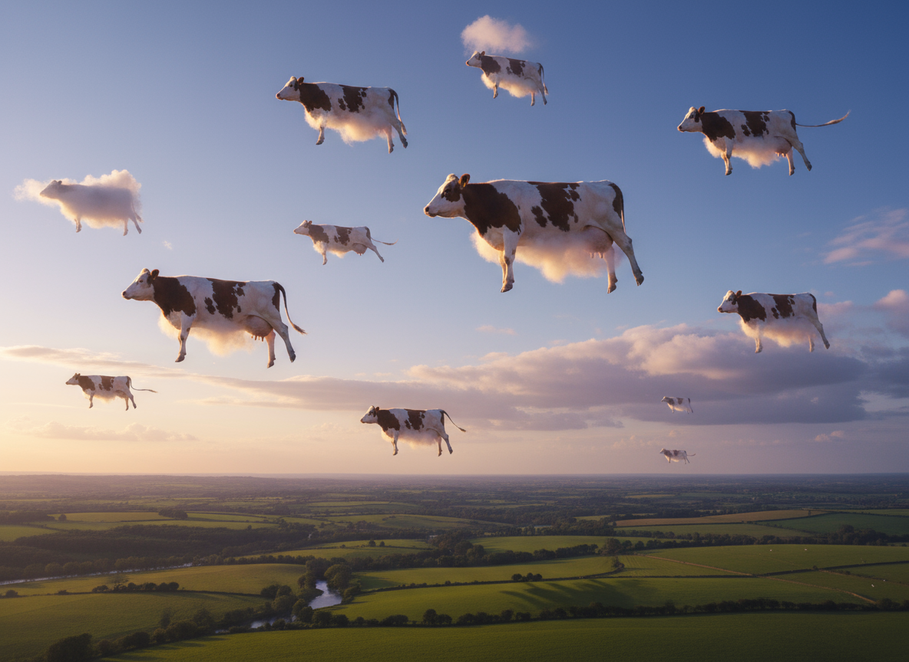
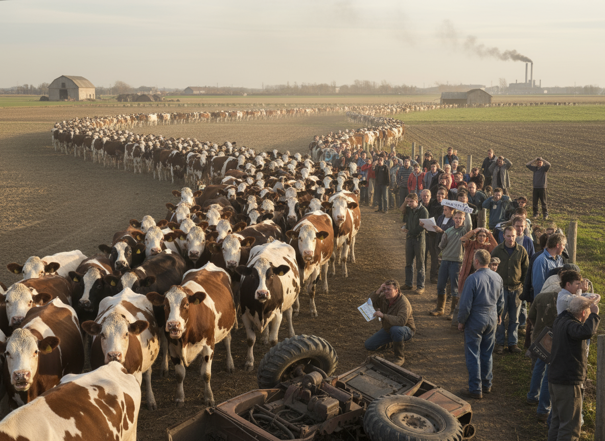

Vil du have din egen ko? Send din ansøgning allerede i dag.
Alle har ret til at ansøge om egen ko, men du vil blive vuderet ud fra din sociale statud. Du sende din ansøgning via linket nedenfor.
AnsøgPludselig erklæres alle danske køer som “midlertidige busser” under et systemnedbrud. Folk prøver at pendle på dem, men køerne går kun mod marker og kaffepauser.
Alle har ret til at ansøge om egen ko, men du vil blive vuderet ud fra din sociale statud. Du sende din ansøgning via linket nedenfor.
Ansøg
Mens eksperter advarer om uforudsigeligt kaos, hylder politikerne udviklingen som et banebrydende skridt mod bæredygtig energi og en grønnere verden.
Eksperter forudser, at det kan blive et af de største tilfælde af kaos, vi har set i nyere tid. Politikerne derimod ser det som et vigtigt skridt mod en grønnere fremtid og et symbol på bæredygtig energi. Billedet illustrerer, hvordan denne vision i praksis kunne tage sig ud.
Systemnedbruddet i det offentlige kan være et bæredygtigt bud på fremtidens transport, hvor vi tager miljøet alvorligt.
KoMobilitet er et nyt grønt initiativ, der forbinder land og by gennem bæredygtig samkørsel.
Projektet gør det muligt for lokale landmænd og byboere at dele transport, reducere CO2-udledning og samtidig spare penge. Deltagerne kan booke en plads i en af de mange ko-venlige biler via en app, som både viser ruten og mængden af hø, der kan medbringes.
Initiativet fokuserer på miljøvenlige løsninger, såsom elektriske vogne og planlægning af ruter, der minimerer tomkørsel. Målet er at gøre pendling grønnere og mere hyggelig, hvor både dyr og mennesker nyder turen.

Flere lokale skoler og virksomheder har meldt sig som partnere, og interessen for KoMobilitet vokser dag for dag. Organisatorerne håber, at initiativet kan inspirere andre regioner til at tænke grønt og kreativt om transport.
Vi bliver nødt til at skabe struktur.
 Læs mereTrafikkaosset nåede nye højder i morges, da tusindvis af pendlere tog turen mod arbejde på deres trofaste køer. Motorvejen blev hurtigt forvandlet til et hav af horn, haler og høtyve, da de langsomme transportmidler nægtede at sætte farten op. Politiet opfordrer nu til tålmodighed og måske en ekstra klump hø til at bestikke trafikken fremad.
 Læs mere
Læs mere